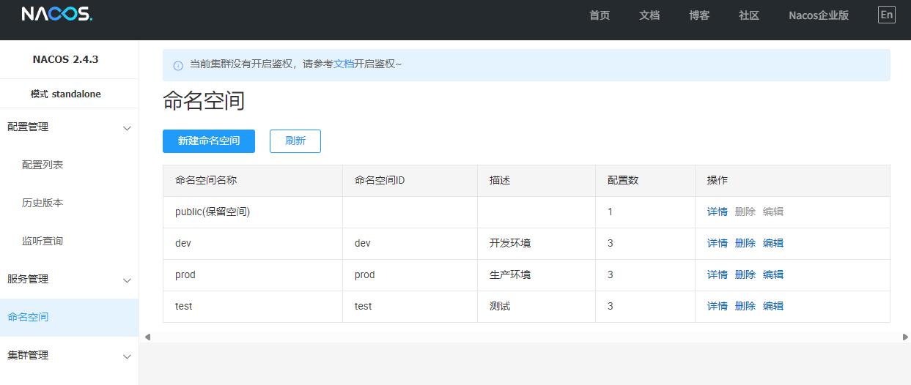
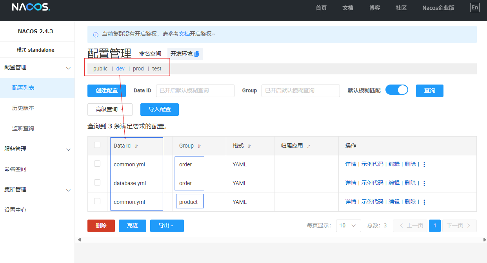
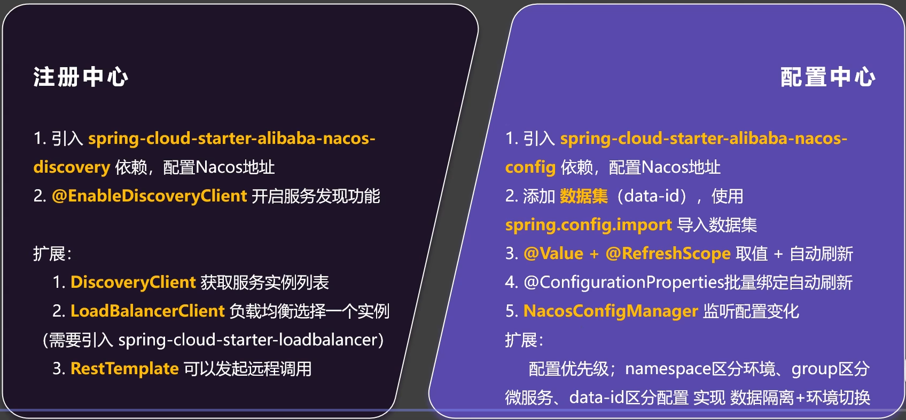
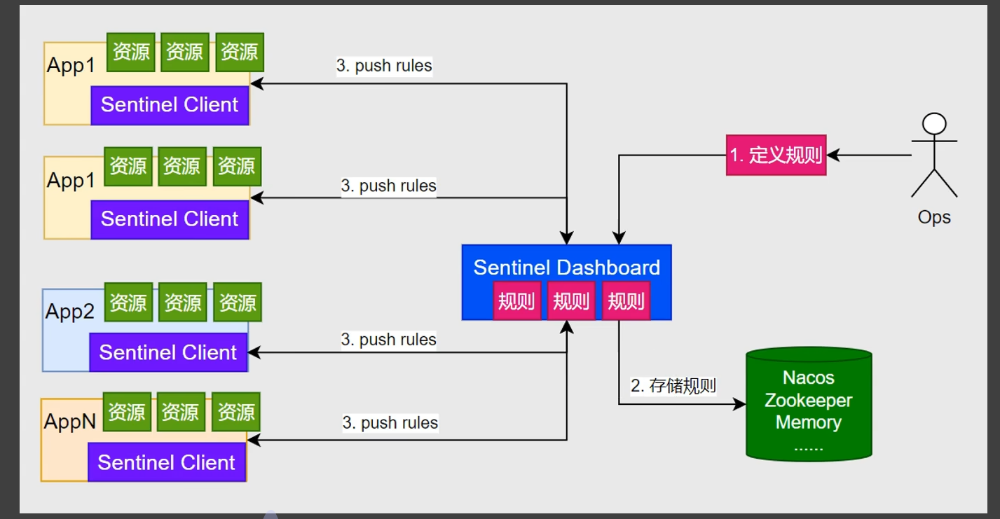
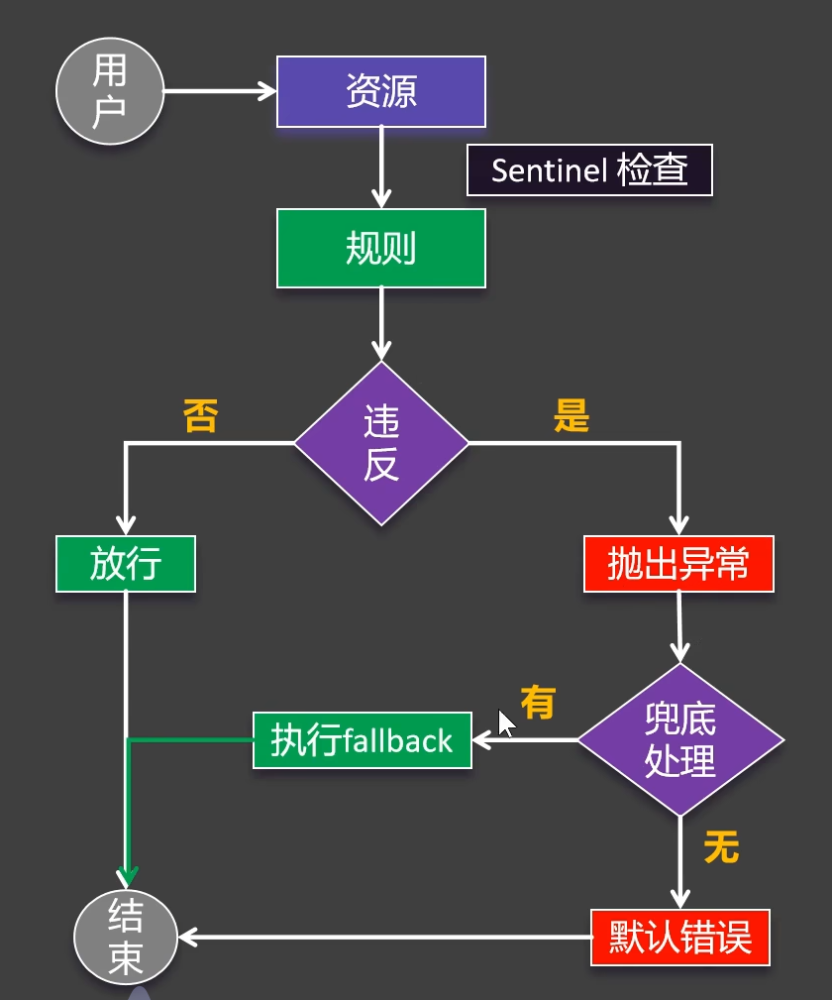
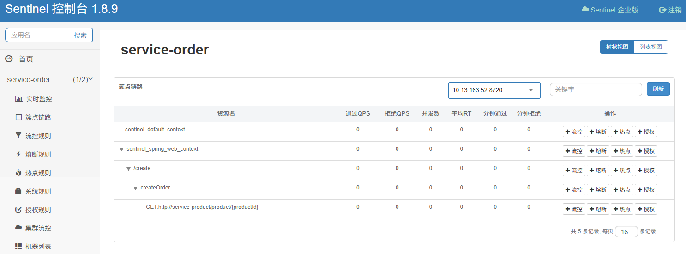
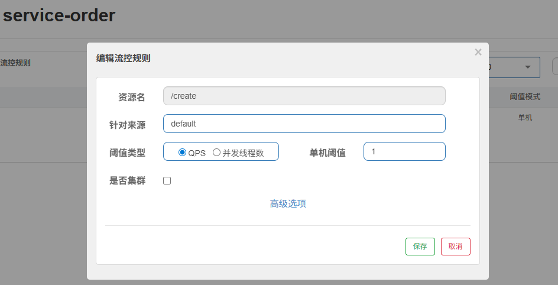
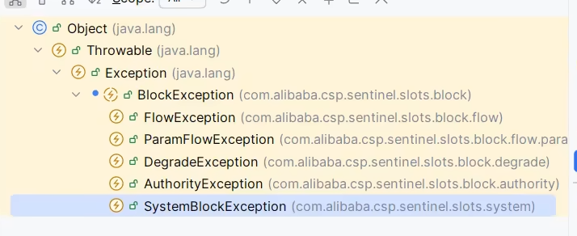
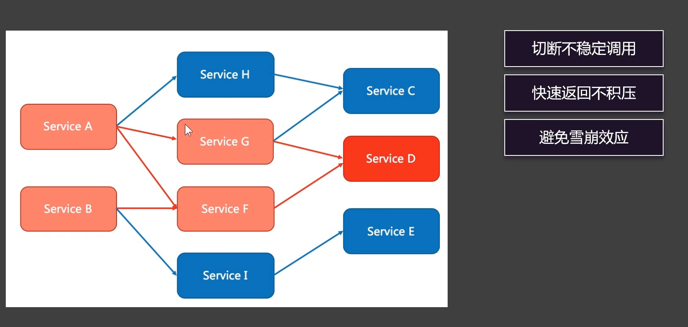

SpringCloud
从单体到集群再到分布式
早期阶段，单体架构是主流选择，所有功能模块打包在一个应用中，开发简单直接，但是随着业务增长，代码变得臃肿，难以扩展特定功能模块，技术栈单一，难以采用新技术。
为了应对单体架构的性能瓶颈和高可用需求，集群架构应运而生。
实现方式：
- 水平扩展：部署多个相同的单体应用实例
- 通过负载均衡器(Nginx、F5等)分配请求
- 共享数据库或数据库主从复制
但是仍然有缺陷，比如应用本身仍然是单体，业务复杂时扩展不灵活。
此时分布式架构与微服务应运而生，分布式架构通过将系统拆分为多个服务来解决上述问题。
本次学习使用尚硅谷b站开放课堂：https://www.bilibili.com/video/BV1UJc2ezEFU
框架（组件）学习与本套课程高度重合，但并不是课程资料的再复写。
相关技术：
- Nacos（注册中心、配置中心）来自Spring Cloud Alibaba
- OpenFegin（远程调用）来自Spring Cloud官方
- Sentinel（异常处理、流控规则、熔断规则）来自Spring Cloud Alibaba
- Gateway（路由、断言、过滤）来自Spring Cloud官方
- Seata（分布式事务）来自Spring Cloud Alibaba
Nacos
注册中心
服务注册
首先进行依赖导入
<!-- nacos 配置中心、注册中心 -->
<dependency>
<groupId>com.alibaba.cloud</groupId>
<artifactId>spring-cloud-starter-alibaba-nacos-discovery</artifactId>
</dependency>
使用docker或者直接运行的方式启动Nacos
在Windows平台直接运行下使用命令：startup.cmd -m standalone（standalone为使用单机模式）
在不同的服务下编写配置，如订单服务和产品服务：
spring:
cloud:
nacos:
server-addr: 127.0.0.1:8848
application:
name: service-order
server:
port: 8080
spring:
cloud:
nacos:
server-addr: 127.0.0.1:8848
application:
name: service-product
server:
port: 9000
其中nacos.server-addr为nacos服务的地址为127.0.0.1:8848（本地测试）
访问http://localhost:8848/nacos，在服务管理-服务列表可以看到现在已经注册上的服务
| 服务名 | 分组名称 | 集群数目 | 实例数 | 健康实例数 | 触发保护阈值 | 操作 |
|---|---|---|---|---|---|---|
| service-order | DEFAULT_GROUP | 1 | 2 | 2 | false | 详情|示例代码|订阅者|删除 |
| service-product | DEFAULT_GROUP | 1 | 3 | 3 | false | 详情|示例代码|订阅者|删除 |
服务发现
由于使用了Nacos，服务发现方法的调用存在两套标准，分别是Spring Cloud的DiscoveryClient和Nacos的NacosServiceDiscovery
@Resource
DiscoveryClient discoveryClient;
@Resource
NacosServiceDiscovery nacosServiceDiscovery;
下面为测试代码：
/**
* spring标准discovery使用DiscoveryClient
*/
@Test
public void testDiscoveryClient() {
for (String service : discoveryClient.getServices()) {
/*
循环输出服务列表（服务名）
service-order
service-product
*/
System.out.println(service);
// 获取所有实例、输出IP与端口号
List<ServiceInstance> instances = discoveryClient.getInstances(service);
for (ServiceInstance instance : instances) {
System.out.println(instance.getHost() + ":" + instance.getPort());
}
}
}
/**
* nacos标准discovery使用NacosServiceDiscovery
*/
@Test
public void testNacosServiceDiscovery() throws NacosException {
for (String service : nacosServiceDiscovery.getServices()) {
// 输出服务列表
System.out.println(service);
// 获取所有实例、输出IP与端口号
List<ServiceInstance> instances = nacosServiceDiscovery.getInstances(service);
for (ServiceInstance instance : instances) {
System.out.println(instance.getHost() + ":" + instance.getPort());
}
}
}
输出：
service-order
192.168.25.1:8080
192.168.25.1:8001
service-product
192.168.25.1:9000
192.168.25.1:9002
192.168.25.1:9001
如果并没有如此多的输出可能是只启动了两个后端服务，还需要多启动几个来模拟分布式。
其次，在实际应用中，这个一般会被进一步封装，其发现的过程是自动进行的。
初见，远程调用
现在有一个实例，我们需要一个下单功能，当用户下单后对其商品进行结算这里我们对一些数据做出模拟。
订单实体：
@Data
public class Order {
private Long id;
private BigDecimal totalAmount;
private Long userId;
private String nickName;
private String address;
private List<Object> product;
}
商品实体：
@Data
public class Product {
private Long id;
private BigDecimal price;
private String productName;
private int num;
}
其次就是相应和Controller与Service代码，其较为简单不在此处详细展开，不过我想说一下订单部分的Service：
@Service
public class OrderServiceImpl implements OrderService {
@Override
public Order createOrder(Long productId, Long userId) {
Order order = new Order();
order.setId(1L);
// TODO 需要计算
order.setTotalAmount(new BigDecimal("0"));
order.setUserId(userId);
order.setNickName("Karry.Liu");
order.setAddress("北极");
// TODO 需要远程查询
order.setProduct(null);
return order;
}
}
由于Order与Product分别位于两个服务之中，其详细的金额Amount与产品详情列表Product List我们目前似乎无法获取，那我们应该怎么办呢？这个我们暂时按下不表，我们现在需要解决一个更加棘手的问题。
现在我们有如下项目结构（简略版）
- cloud-demo(基座项目)
|
| - services(服务层)
| |
| | - service-order(订单服务)(包含订单实体bean、服务service和控制controller)
| |
| | - service-product(商品服务)(包含商品实体bean、服务service和控制controller)
订单服务无法使用商品bean，反之商品服务无法使用订单bean，因为其每个服务均为独立的项目。
当Order服务需要Product服务时，其在Order的代码内一定会存在与Product相关的关键字，特别地，由于两个服务之间项链紧密，在Product的代码内也许也会出现Order相关的关键字。可是两套服务分别维护着自己的bean（实体对象/实体类），在不同的服务之间甚至没有办法使用对方的实体类。
解决方案也很简单，将商品与订单的Bean剥离出来，形成一个独立的项目，与services等价地位，并在services添加model依赖。
<!-- 模型依赖 -->
<dependency>
<groupId>com.KarryCode</groupId>
<artifactId>model</artifactId>
<version>0.0.1-SNAPSHOT</version>
</dependency>
现在的结构为：
- cloud-demo(基座项目)
|
| - model(模型层)(包含订单实体bean与商品实体bean)
|
| - services(服务层)
| |
| | - service-order(订单服务)(包含服务service和控制controller)
| |
| | - service-product(商品服务)(包含服务service和控制controller)
至此，服务之间的实体使用已经被打通。
其次编写远程访问请求模板类RestTemplate，由于RestTemplate是线程安全的，我们可以这样写：
@Configuration
public class ProductServiceConfig {
@Bean
public RestTemplate restTemplate() {
return new RestTemplate();
}
}
// 上拉使他成为一个Bean
其次编写远程访问方法：
private Product getProductFromRemote(Long productId) {
// 获取商品服务所在的所有机器IP+端口
List<ServiceInstance> instances = discoveryClient.getInstances("service-product");
// 获取第一个机器（简单版）
ServiceInstance serviceInstance = instances.get(0);
// 拼接请求地址 http://192.168.25.1:9000/product/100
String url = "http://" + serviceInstance.getHost() + ":" + serviceInstance.getPort() + "/product/" + productId;
log.info("远程请求: {}", url);
// 发送请求（远程）
return restTemplate.getForObject(url, Product.class);
}
补充createOrder方法
public Order createOrder(Long productId, Long userId) {
// 此处提前远程查询
Product productFromRemote = getProductFromRemote(productId);
Order order = new Order();
order.setId(1L);
// 计算
order.setTotalAmount(productFromRemote.getPrice().multiply(new BigDecimal(productFromRemote.getNum())));
order.setUserId(userId);
order.setNickName("Karry.Liu");
order.setAddress("北极");
// 远程查询的结果
order.setProduct(List.of(productFromRemote));
return order;
}
此时双端服务已经打通了，注意到日志：2025-06-24T22:21:11.646+08:00 INFO 3496 — [service-order] [nio-8080-exec-1] c.K.service.impl.OrderServiceImpl : 远程请求: http://192.168.25.1:9000/product/100
{
"id": 1,
"totalAmount": 198,
"userId": 2,
"nickName": "Karry.Liu",
"address": "北极",
"product": [
{
"id": 100,
"price": 99,
"productName": "IPhone-100",
"num": 2
}
]
}
此时我们还有两个问题，一是我们每次只取了第一个服务器，二是这样写太复杂，没有实现负载均衡。
针对此第一个问题将在下一小节中解决，第二个问题将在下一个组件中解决。
实现负载均衡APIs
首先是使用复杂一点的方式，后面将会介绍使用注解的形式。
先引入负载均衡环境依赖。
<!-- 负载均衡 -->
<dependency>
<groupId>org.springframework.cloud</groupId>
<artifactId>spring-cloud-starter-loadbalancer</artifactId>
</dependency>
基于方法的负载均衡
将getProductFromRemote方法改造为getProductFromRemoteLoadBalancing：
private Product getProductFromRemoteLoadBalancing(Long productId) {
// 获取商品服务所在机器(负载均衡)
ServiceInstance chooseLoadBalancing = loadBalancerClient.choose("service-product");
// 拼接请求地址 http://192.168.25.1:9000/product/100
log.info("服务地址（uri）: {}", chooseLoadBalancing.getUri());//http://192.168.25.1:9000
String url = "http://" + chooseLoadBalancing.getHost() + ":" + chooseLoadBalancing.getPort() + "/product/" + productId;
log.info("远程请求: {}", url);
// 发送请求（远程）
return restTemplate.getForObject(url, Product.class);
}
多次请求 http://localhost:8080/create 后观察日志：
服务地址（uri）: http://192.168.25.1:9001
远程请求: http://192.168.25.1:9001/product/100
服务地址（uri）: http://192.168.25.1:9002
远程请求: http://192.168.25.1:9002/product/100
服务地址（uri）: http://192.168.25.1:9000
远程请求: http://192.168.25.1:9000/product/100
可以观察到其负载均衡的使用了不同的端口，下面将介绍注解的形式。
基于注解的负载均衡
还记得我们之前使用的RestTemplate嘛？
@Resource
private RestTemplate restTemplate;
我们可以观察到，无论哪种方法，最终都会是去使用restTemplate.getForObject(…)这个方法，如果这个方法自己就可以进行负载均衡呢？我们是不是可以少些一点代码？
改造ProductServiceConfig配置类：
@Configuration
public class ProductServiceConfig {
@LoadBalanced// 使用负载均衡
@Bean
public RestTemplate restTemplate() {
return new RestTemplate();
}
}
将getProductFromRemoteLoadBalancing方法改造为getProductFromRemoteLoadBalancingWithAnnotation：
private Product getProductFromRemoteLoadBalancingWithAnnotation(Long productId) {
String url = "http://service-product/product/" + productId;
// 发送请求（远程）
return restTemplate.getForObject(url, Product.class);
}
注意到我们的url中出现了service-product，在由于restTemplate被追加了@LoadBalanced注解，使得整个restTemplate自带有负载均衡的能力，url传过去的时候service-product会被自动替换为IP+HOST的形式，替换的结果符合负载均衡。
配置中心
基本用法
引入依赖
<!-- 配置中心 -->
<dependency>
<groupId>com.alibaba.cloud</groupId>
<artifactId>spring-cloud-starter-alibaba-nacos-config</artifactId>
</dependency>
书写导入配置：nacos:service-order.yml
spring:
config:
import: nacos:service-order.yml
cloud:
nacos:
server-addr: 127.0.0.1:8848
application:
name: service-order
server:
port: 8080
在nacos中设置名为service-order.yml
order:
timeout: 120s
autoConfirm: 7d
在controller加入@RefreshScope自动刷新注解
@Value("${order.timeout}")
private String orderTimeout;
@Value("${order.auto-confirm}")
private String orderAutoConfirm;
// 获取配置信息
@GetMapping("/getConfig")
public String getConfig() {
return "order.timeout:" + orderTimeout + " order.autoConfirm:" + orderAutoConfirm;
}
访问后得到回应：order.timeout:120s order.autoConfirm:7d
但是配置中心的依赖导入方法具有广播性，有可能出现其他服务的无法启动问题，因此可以在yml中加入：
spring:
cloud:
nacos:
config:
import-check:
enabled: false
来禁用检查。
无感动态刷新
手动配置很麻烦，通常使用统一导入的方法来实现，创建OrderProperties：
@Data
@Component
// 批量获取配置，无需使用@RefreshScope即可自动刷新
@ConfigurationProperties(prefix = "order")
public class OrderProperties {
String timeout;
String autoConfirm;
}
@ConfigurationProperties(prefix = “order”)中prefix = "order"获取前缀为order的配置，有了ConfigurationProperties无需使用@RefreshScope即可自动刷新。
改造OrderController：
@Autowired
private OrderProperties orderProperties;
// 获取配置信息
@GetMapping("/getConfig")
public String getConfig() {
return "order.timeout:" + orderProperties.getTimeout() + " order.autoConfirm:" + orderProperties.getAutoConfirm();
}
本地配置与Nacos配置冲突时
当本地配置与Nacos配置冲突时，优先以Nacos中的配置中心为准。
即先导入优先，外部优先。
当：import: nacos:service-order.yml,nacos:common.yml 出现时，仍然是优先以第一次出现的nacos:service-order.yml为准。
数据隔离
当出现不同环境需要不同配置时，比如dev环境、test环境和prod环境，分别需要不同的配置，我们该如何组织？
首先Nacos提供了：命名空间-组织-配置单元的模式，命名空间可以对应到dev环境、test环境和prod环境等，组开源对应到不同的微服务比如商品微服务、用户微服务等，配置单元即为具体的详细配置。
首先在Nacos命名空间、组织与配置。
这里已经创建了dev环境、test环境和prod环境，下面创建详细的组与配置

然后改造yml配置文件
spring:
profiles:
active: dev
cloud:
nacos:
server-addr: 127.0.0.1:8848
config:
namespace: ${spring.profiles.active:dev}
application:
name: service-order
server:
port: 8080
---
spring:
config:
activate:
on-profile: dev
import:
- nacos:common.yml?group=order
- nacos:database.yml?group=order
---
spring:
config:
activate:
on-profile: test
import:
- nacos:common.yml?group=order
- nacos:database.yml?group=order
---
spring:
config:
activate:
on-profile: prod
import:
- nacos:common.yml?group=order
- nacos:database.yml?group=order
具体地：
namespace: ${spring.profiles.active:dev}
这里主要负责的时从项目到Nacos时我们应该选择哪套命名空间，是Nacos的命名空间
而对于：
profiles:
active: dev
主要负责的是要激活哪套分片配置，是on-profile: dev还是on-profile: test，还是on-profile: prod，这里指的是项目的配置分片
此时只需要切换不同的active: dev，即可完成不同环境的配置切换
Nacos总结

来自尚硅谷课堂：https://www.bilibili.com/video/BV1UJc2ezEFU
OpenFeign
OpenFeign是Spring Cloud生态系统中的一个重要组件。Spring Cloud是一个基于Spring Boot实现的分布式系统开发工具，它提供了一系列的工具来简化分布式系统开发，包括服务注册与发现、配置中心、断路器等功能，OpenFeign默认集成了Ribbon负载均衡器。
远程调用
导入注解
<!-- openfeign 远程调用 -->
<dependency>
<groupId>org.springframework.cloud</groupId>
<artifactId>spring-cloud-starter-openfeign</artifactId>
</dependency>
创建feign包与XXXClient接口
@FeignClient(value = "service-product")
public interface ProductFeignClient {
// mvc注解使用的两套逻辑，放在Controller上是接收请求，放在FeignClient上是发送请求
@GetMapping("/product/{productId}")
Product getProductById(@PathVariable String productId);
}
这里的value = "service-product"指的是给那个微服务发送请求，这里还标注了GetMapping，指的是给那个微服务发送请求的路径是什么，其明确了接口。
改造订单创建方法
@Override
public Order createOrder(Long productId, Long userId) {
// Product productFromRemote = getProductFromRemoteLoadBalancingWithAnnotation(productId);
Product productFromRemote = productFeignClient.getProductById(productId);
Order order = new Order();
order.setId(1L);
// TODO 需要计算
order.setTotalAmount(productFromRemote.getPrice().multiply(new BigDecimal(productFromRemote.getNum())));
order.setUserId(userId);
order.setNickName("Karry.Liu");
order.setAddress("北极");
// TODO 需要远程查询
order.setProduct(List.of(productFromRemote));
return order;
}
也可以向外部（第三方）做出请求
比如下面是一个针对天气数据接口的代码实现
@FeignClient(value = "weather-client", url = "http://apis.juhe.cn")
public interface WeatherFeignClient {
@GetMapping("/simpleWeather/query")
String getWeatherByCityId(@RequestParam("city") String city,
@RequestParam("key") String key);
default String getEncodedCity(String city) throws Exception {
return URLEncoder.encode(city, StandardCharsets.UTF_8);
}
}
小技巧（懒狗模式）
如果是要访问自己的设计的接口，着通常是业务接口，比如一个订单服务要访问商品服务，最简单的方式就是将，商品的Controller下的接口找到，然后直接复制方法名（以接口的方式进行复制就可以），然后把他放在地点服务的OpenFegin接口下就可以了，值得注意的是，OpenFegin已经帮我们做好了负载均衡，相比上述Nacos中那种请求模板方便多了。
具体地如下面的操作所示：
-
找到商品服务接口的代码
@Slf4j @RestController public class ProductController { @Autowired private ProductService productService; @GetMapping("/product/{productId}") public Product getProduct(@PathVariable Long productId) { log.info("查询商品信息: {}", productId); return productService.getProductById(productId); } } -
就像接口的方式去复制代码
@GetMapping("/product/{productId}") public Product getProduct(@PathVariable Long productId) -
粘贴到订单服务之中
@FeignClient(value = "service-product") public interface ProductFeignClient { // mvc注解使用的两套逻辑，放在Controller上是接收请求，放在FeignClient上是发送请求 @GetMapping("/product/{productId}") Product getProductById(@PathVariable Long productId); @GetMapping("/product/{productId}") public Product getProduct(@PathVariable Long productId); }可以观察到，粘贴到ProductFeignClient中的代码与我们之前自己定义的代码片段基本是完全一致，所以这是一个非常好用的小技巧。
面试题
问：客户端的负载均衡和服务端负载均衡有不用？
答：首先对于客户端的负载均衡来说，客户端服务会先去访问注册中心，首先获取到一些地址，然后选择一个地址，最后发起调用，这个过程完全是发生在客户端方面的，但是对于服务端的负载均衡来说，这个服务端只对外部暴露一个服务接口，那么所有的请求都需要通过这个唯一的接口来访问。然而，在这个接口背后有着一套负载均衡的逻辑，接口背后运行着许多的服务，而具体使用哪个，由不同的负载均衡算法决定，这一过程放生在服务端。
日志
可以在Configuration类下加入以下代码：
@Bean
Logger.Level feignLoggerLevel() {
return Logger.Level.FULL;
}
在yaml下加入远程调用包的日志配置：
logging:
level:
com.KarryCode.feign: debug
再次请求即可观察到日志输出，可以看到是怎么请求的。
超时控制
分别有连接超时和读取超时，通过其源码实现可以观察到，连接超时是10秒，而读取超时是60秒。我们仍然可以通过配置来修改，这个具体的时间。
这里说一个题外话，我们可以使用多个配置文件来让其生效，比如我这里有一个application-feign.yml，我们还有一个主文件application.yml，如果我们想让application-feign.yml生效的话，我们可以在主配置文件加上这样的一句话：include: feign
spring: profiles: active: dev include: feign
其配置方式如下所示：
spring:
cloud:
openfeign:
client:
config:
default:
connectTimeout: 3000
readTimeout: 5000
logger-level: full
重试机制
默认情况下，OpenFeign的重试策略是从不重试（是的没错），我们可以手动启动这个重试策略，其具体的有：我们可以设计间隔100毫秒，最大间隔1秒。最大尝试5次。类似计网里面的退避算法
同样在相应的配置下面加入这样的代码：
@Bean
Retryer feignRetryer() {
return new Retryer.Default();
}
这是一个默认的重试器，其重试规则正如我上面所说那样：我们可以设计间隔100毫秒，最大间隔1秒。最大尝试5次。
拦截器
我们可以创建一个请求拦截器：
@Component
public class XTokenRequestInterceptor implements RequestInterceptor {
@Override
public void apply(RequestTemplate requestTemplate) {
System.out.println("拦截器启动");
requestTemplate.header("X-Token", UUID.randomUUID().toString());
}
}
然后再接收请求时，我们可以解析一下：
@GetMapping("/product/{productId}")
public Product getProduct(@PathVariable Long productId, HttpServletRequest request) {
System.out.println("token:" + request.getHeader("X-Token"));
log.info("查询商品信息: {}", productId);
return productService.getProductById(productId);
}
可以看到Token的输出：token:ebf2c253-7e63-483a-92bc-fc9d1819a418。
Fallback兜底返回
兜底返回机制需要配合我们还没有学到的sentinel框架，首先引入依赖：
<!-- sentinel -->
<dependency>
<groupId>com.alibaba.cloud</groupId>
<artifactId>spring-cloud-starter-alibaba-sentinel</artifactId>
</dependency>
加入配置：
feign:
sentinel:
enabled: true
在服务发起端加入兜底策略：
@Component
public class ProductFeignClientFallback implements ProductFeignClient {
@Override
public Product getProductById(Long productId) {
Product product = new Product();
product.setId(productId);
product.setPrice(new BigDecimal("0"));
product.setProductName("不到啊-" + productId);
product.setNum(2);
return product;
}
}
关闭Product服务，只保留Order服务，可以看到返回了兜底数据：
{
"id": 1,
"totalAmount": 0,
"userId": 777,
"nickName": "Karry.Liu",
"address": "北极",
"product": [
{
"id": 888,
"price": 0,
"productName": "不到啊-888",
"num": 2
}
]
}
Sentinel
 基础场景
@SentinelResource(value = "createOrder")
添加上此注解，流量即被监控。
添加流控规则：
每秒只放行一次请求，如果你请求多了就会被打回。
Fail to send:http://localhost:8081/create?productId=777&userId=1
Blocked by Sentinel (flow limiting)
这是一个默认错误页面，我们能不能返回一个高度自定义的数据呢？
但是可以的！这涉及到Sentinal的异常处理机制。
异常处理
- Flow Exception：流控异常
- Param Flow Exception：热点参数异常
- Degrade Exception：熔断降级异常
- Authority Exception：权限控制类异常
- System Block Exception：系统阻塞异常
上述说的问题，我们需要自定义一个异常。
@Component
public class MyBlockException implements BlockExceptionHandler {
private ObjectMapper objectMapper = new ObjectMapper();
@Override
public void handle(HttpServletRequest httpServletRequest,
HttpServletResponse httpServletResponse,
String resourceName, BlockException e) throws Exception {
R error = R.error(500, resourceName + "被限流了", e.getMessage());
httpServletResponse.setContentType("application/json;charset=utf-8");
PrintWriter writer = httpServletResponse.getWriter();
String json = objectMapper.writeValueAsString(error);
writer.write(json);
}
}
这个时候，如果你给createOrder方法添加流控规则的话，你会发现这个我们之前定义的json不生效了。
Fail to send:http://localhost:8081/create?productId=777&userId=1
<html><body><h1>Whitelabel Error Page</h1><p>This application has no explicit mapping for /error, so you are seeing this as a fallback.</p><div id='created'>Wed Nov 05 16:15:00 CST 2025</div><div>There was an unexpected error (type=Internal Server Error, status=500).</div></body></html>
这是因为它的异常类型不同，才导致的这样的结果。
流控规则
阈值类型：
- QPS：每秒请求数
- 并发线程数
我们优先推荐使用QPS。
是否集群：
- 单机均摊
- 总体阈值
流控模式：
- 直接模式
- 关联模式
- 链路模式
流控效果
- 快速失败
- Warm Up
- 排队等待
熔断降级
Gateway
参考文献
- 【尚硅谷SpringCloud速成】https://www.bilibili.com/video/BV1UJc2ezEFU